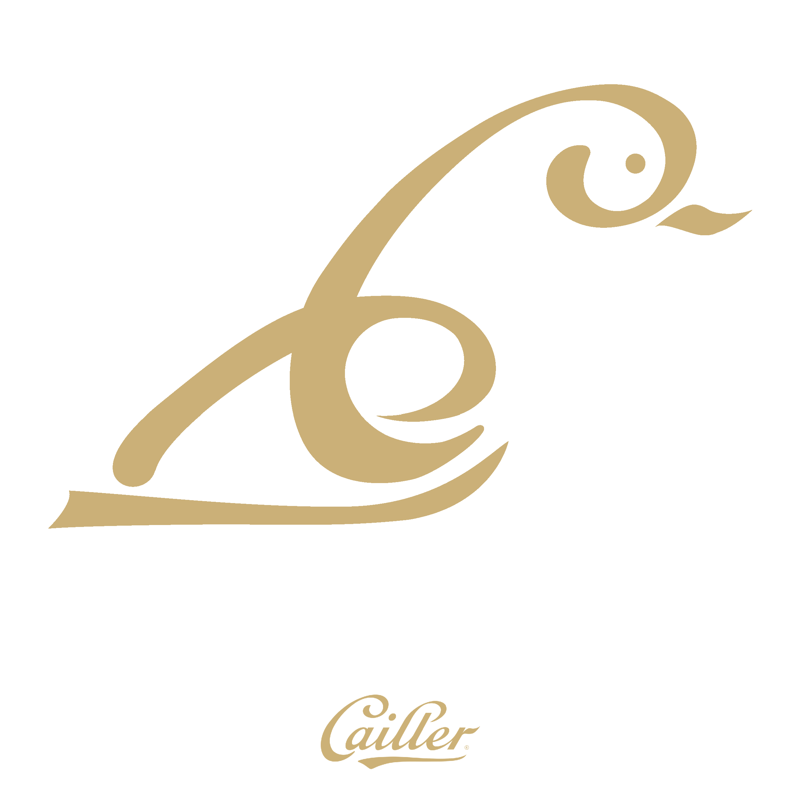

Tupidix
Ryan Dorasamy
Tupidix
Ryan Dorasamy

Je suis actuellement étudiant en troisième année de Bachelor en Communication des Médias à l'HEIG-VD, passionné par le monde captivant du web. Mon parcours académique m'a permis d'acquérir une solide base en communication digitale, en design graphique, et en développement de sites web.
Mon objectif est de créer des expériences en ligne captivantes et fonctionnelles, en mettant en œuvre des compétences variées, allant du design créatif à la programmation rigoureuse.
Grâce à mes expériences à l'HEIG-VD j'ai appris à coder dans divers langages de programmation.
Ma formation à l'eracom et l'HEIG m'ont également appris à créer des maquettes et des designs.
Je parle français et ma mère me parle en allemand depuis que je suis petit. J'ai appris l'anglais à l'école et en voyage.
Voici mon tout Premier site web, réalisé pour mon travail de diplôme avec mes connaissance en 2021. Ce site m'a permis d'obtenir la note de 6. Il a été codé uniquement en HTML et CSS. Ce site web présente divers jeux de rythmes ainsi que leurs spécificités.

Ce projet nous a aidé à nous familiariser avec le JavaScript et à faire des requêtes API. Il s'agit d'un lecteur de musique sur lequel nous avons implémenté diverses fonctionnalités afin de nous permettre de mettre et d'enlever la musique, choisir une musique, chercher une musique/artiste ou encore d'ajouter des musiques en favoris.
L'API a été retirée depuis, le site ne fonctionne donc plus.
Cette partie comprends des logos et visuels créés sur Adobe Photoshop et Adobe Illustrator.
Réalisation d'un montage photo entre un poisson et une femme.

Pull créé lors d'un projet E-commerce "Sutairu".

T-shirt créé lors d'un projet E-commerce "Sutairu".
Création d'un animal à l'aide d'un logo.
Utilisation de dégradé pour donner des effets de reflet et brillance sur des formes en 2D
Afin de créer un site web, il nous faut un modèle sur lequel on va pouvoir vérifier si l'identité du site et les éléments entre eux font sens ou non.
En ligne, je suis plus connu sous le pseudonyme Tupidix. Je suis pationné par le la pop culture japonaise, les jeux vidéos plus particulièrement les jeux de rythmes. Je m'intéresse également aux nouvelles technologies et à la programmation.
Je stream mes performances sur Twitch et poste des vidéos sur Youtube. Actuellement 1er Suisse sur plusieurs jeux de rythmes, je participe à des tournois et des compétitions. Je me rends également à des évènements pour faire découvrir et inciter les gens à jouer à ces jeux.
Voici osu!mania le 2ème mode de jeu le plus joué d'osu! où je figure numéro 1 au classement Suisse !
J'aime beaucoup aller faire du snowboard en hiver. Voyager dans des pays avec des cultures et manière de vivre assez différentes de la notre.